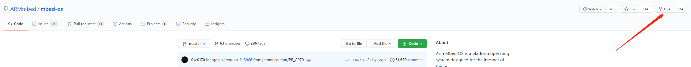
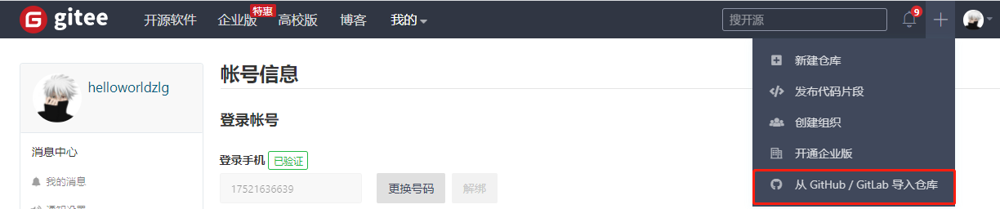
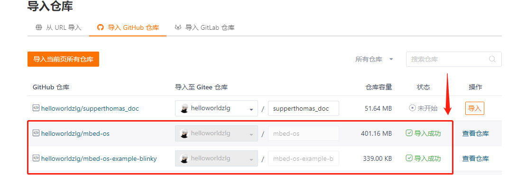

13. mbedOS优化代码同步速度的小技巧
官方的代码仓库托管在github平台，由于国内访问速度比较慢，可能存在同步失败的情况，以下提供优化的方法：
13.1. fork官方的代码仓库到自己的github代码仓库下
找到对应的官方的代码仓库，点击fork即可。

需要frok的代码仓库(代码量比较大的依赖库)如下：
mbed-osmbed-os-ble-utils
13.2. 将上述fork后的代码同步到gitee平台
这个动作可以借助gitee平台本身提供的功能实现，具体如下：

选择github上对应的仓库点击导入即可

13.3. 修改代码中指明的依赖仓库路径到gitee平台的路径
我们clone官方例程到本地时，官方例程中默认的依赖库的路径需要修改为gitee平台的路径。
例如我们从官方clone的mbed-os-example-blinky例程中，mbed-os.lib文件中需要将路径作如下修改：
change fromhttps://github.com/ARMmbed/mbed-os/#f2278567d09b9ae9f4843e1d9d393526b9462783
tohttps://gitee.com/null_752_5567/mbed-os/#f2278567d09b9ae9f4843e1d9d393526b9462783
修改完后，再执行mbed deploy，速度将获得极大的提升。